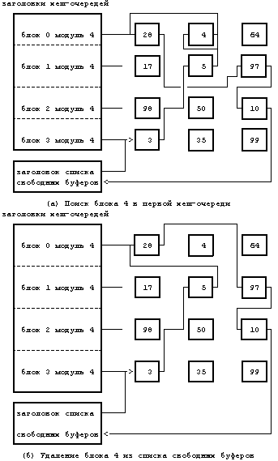
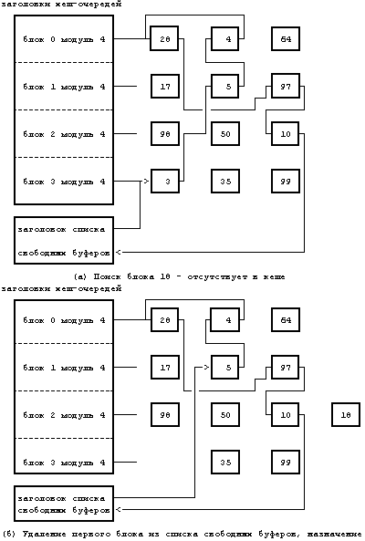
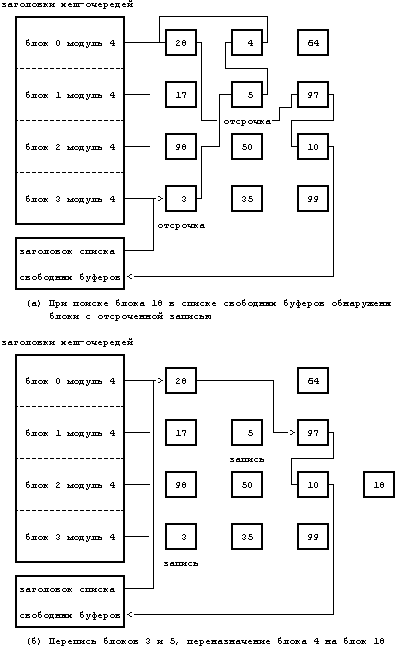
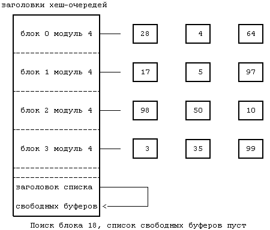
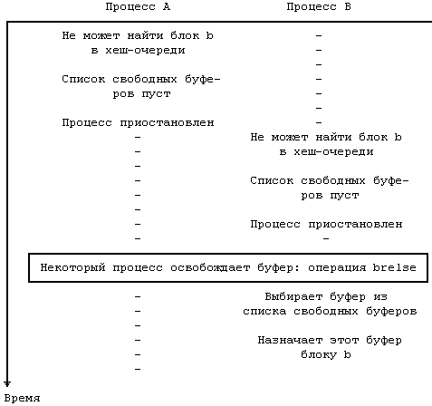
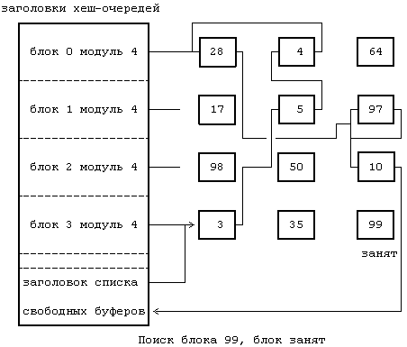

Как показано на Рисунке 2.1, алгоритмы верхнего уровня, используемые ядром для подсистемы управления файлами, инициируют выполнение алгоритмов управления буферным кешем. При выборке блока алгоритмы верхнего уровня устанавливают логический номер устройства и номер блока, к которым они хотели бы получить доступ. Например, если процесс хочет считать данные из файла, ядро устанавливает, в какой файловой системе находится файл и в каком блоке файловой системы содержатся данные, о чем подробнее мы узнаем из главы 4. Собираясь считать данные из определенного дискового блока, ядро проверяет, находится ли блок в буферном пуле, и если нет, назначает для него свободный буфер. Собираясь записать данные в определенный дисковый блок, ядро проверяет, находится ли блок в буферном пуле, и если нет, назначает для этого блока свободный буфер. Для выделения буферов из пула в алгоритмах чтения и записи дисковых блоков используется операция getblk (Рисунок 3.4).
Рассмотрим в этом разделе пять возможных механизмов использования getblk для выделения буфера под дисковый блок.
- Ядро обнаруживает блок в хеш-очереди, соответствующий ему буфер свободен.
- Ядро не может обнаружить блок в хеш-очереди, поэтому оно выделяет буфер из списка свободных буферов.
- Ядро не может обнаружить блок в хеш-очереди и, пытаясь выделить буфер из списка свободных буферов (как в случае 2), обнаруживает в списке буфер, который помечен как "занят на время записи". Ядро должно переписать этот буфер на диск и выделить другой буфер.
- Ядро не может обнаружить блок в хеш-очереди, а список свободных буферов пуст.
- Ядро обнаруживает блок в хеш-очереди, но его буфер в настоящий момент занят.
Обсудим каждый случай более подробно.
Осуществляя поиск блока в буферном пуле по комбинации номеров устройства и блока, ядро ищет хеш-очередь, которая бы содержала этот блок. Просматривая хеш-очередь, ядро придерживается списка с указателями, пока (как в первом случае) не найдет буфер с искомыми номерами устройства и блока. Ядро проверяет занятость блока и в том случае, если он свободен, помечает буфер "занятым" для того, чтобы другие процессы (**) не смогли к нему обратиться. Затем ядро удаляет буфер из списка свободных буферов, поскольку буфер не может одновременно быть занятым и находиться в указанном списке. Если другие процессы попытаются обратиться к блоку в то время, когда его буфер занят, они приостановятся до тех пор, пока буфер не освободится. На Рисунке 3.5 показан первый случай, когда ядро ищет блок 4 в хеш-очереди, помеченной как "блок 0 модуль 4". Обнаружив буфер, ядро удаляет его из списка свободных буферов, делая блоки 5 и 28 соседями в списке.
алгоритм getblk
входная информация: номер файловой системы номер блока
выходная информация: буфер, который можно использовать для блока
{ выполнить если (буфер не найден)
{ если (блок в хеш-очереди)
{ если (буфер занят) /* случай 5 */
{
приостановиться (до освобождения буфера);
продолжить; /* цикл с условием продолжения */
}
пометить буфер занятым; /* случай 1 */
удалить буфер из списка свободных буферов;
вернуть буфер;
}
в противном случае /* блока нет в хеш-очереди */
{
если (в списке нет свободных буферов) /*случай 4*/
{
приостановиться (до освобождения любого буфера);
продолжить; /* цикл с условием продолжения */
}
удалить буфер из списка свободных буферов;
если (буфер помечен для отложенной переписи)
/* случай 3 */
{
асинхронная перепись содержимого буфера на диск;
продолжить; /* цикл с условием продолжения */
}
/* случай 2 -- поиск свободного буфера */
удалить буфер из старой хеш-очереди;
включить буфер в новую хеш-очередь;
вернуть буфер;
}
}
}
|
Рисунок 3.4. Алгоритм выделения буфера

Рисунок 3.5. Поиск буфера - случай 1: буфер в хеш-очереди
алгоритм brelse
входная информация: заблокированный буфер
выходная информация: отсутствует
{
возобновить выполнение всех процессов при наступлении
события, связанного с освобождением любого буфера;
возобновить выполнение всех процессов при наступлении
события, связанного с освобождением данного буфера;
поднять приоритет прерывания процессора так, чтобы
блокировать любые прерывания;
если (содержимое буфера верно и буфер не старый)
поставить буфер в конец списка свободных буферов
в противном случае
поставить буфер в начало списка свободных буферов
понизить приоритет прерывания процессора с тем, чтобы
вновь разрешить прерывания;
разблокировать (буфер);
}
|
Рисунок 3.6. Алгоритм высвобождения буфера
Перед тем, как перейти к остальным случаям, рассмотрим, что произойдет с буфером после того, как он будет выделен блоку. Ядро системы сможет читать данные с диска в буфер и обрабатывать их или же переписывать данные в буфер и при желании на диск. Ядро оставляет у буфера пометку "занят"; другие процессы не могут обратиться к нему и изменить его содержимое, пока он занят, таким образом поддерживается целостность информации в буфере. Когда ядро заканчивает работу с буфером, оно освобождает буфер в соответствии с алгоритмом brelse (Рисунок 3.6). Возобновляется выполнение тех процессов, которые были приостановлены из-за того, что буфер был занят, а также те процессы, которые были приостановлены из-за того, что список свободных буферов был пуст. Как в том, так и в другом случае, высвобождение буфера означает, что буфер становится доступным для приостановленных процессов несмотря на то, что первый процесс, получивший буфер, заблокировал его и запретил тем самым получение буфера другими процессами (см. раздел 2.2.2.4). Ядро помещает буфер в конец списка свободных буферов, если только перед этим не произошла ошибка ввода-вывода или если буфер не помечен как "старый" - момент, который будет пояснен далее; в остальных случаях буфер помещается в начало списка. Теперь буфер свободен для использования любым процессом.
Ядро выполняет алгоритм brelse в случае, когда буфер процессу больше не нужен, а также при обработке прерывания от диска для высвобождения буферов, используемых при асинхронном вводе-выводе с диска и на диск (см. раздел 3.4). Ядро повышает приоритет прерывания работы процессора так, чтобы запретить возникновение любых прерываний от диска на время работы со списком свободных буферов, предупреждая искажение указателей буфера в результате вложенного выполнения алгоритма brelse. Похожие последствия могут произойти, если программа обработки прерываний запустит алгоритм brelse во время выполнения процессом алгоритма getblk, поэтому ядро повышает приоритет прерывания работы процессора и в стратегических моментах выполнения алгоритма getblk. Более подробно эти случаи мы разберем с помощью упражнений.
При выполнении алгоритма getblk имеет место случай 2, когда ядро просматривает хеш-очередь, в которой должен был бы находиться блок, но не находит его там. Так как блок не может быть ни в какой другой хеш-очереди, поскольку он не должен "хешироваться" в другом месте, следовательно, его нет в буферном кеше. Поэтому ядро удаляет первый буфер из списка свободных буферов; этот буфер был уже выделен другому дисковому блоку и также находится в хеш-очереди. Если буфер не помечен для отложенной переписи, ядро помечает буфер занятым, удаляет его из хеш-очереди, где он находится, назначает в заголовке буфера номера устройства и блока, соответствующие данному дисковому блоку, и помещает буфер в хеш-очередь. Ядро использует буфер, не переписав информацию, которую буфер прежде хранил для другого дискового блока. Тот процесс, который будет искать прежний дисковый блок, не обнаружит его в пуле и получит для него точно таким же образом новый буфер из списка свободных буферов. Когда ядро заканчивает работу с буфером, оно освобождает буфер вышеописанным способом. На Рисунке 3.7, например, ядро ищет блок 18, но не находит его в хеш-очереди, помеченной как "блок 2 модуль 4". Поэтому ядро удаляет первый буфер из списка свободных буферов (блок 3), назначает его блоку 18 и помещает его в соответствующую хеш-очередь.

Рисунок 3.7. Второй случай выделения буфера
Если при выполнении алгоритма getblk имеет место случай 3, ядро так же должно выделить буфер из списка свободных буферов. Однако, оно обнаруживает, что удаляемый из списка буфер был помечен для отложенной переписи, поэтому прежде чем использовать буфер ядро должно переписать его содержимое на диск. Ядро приступает к асинхронной записи на диск и пытается выделить другой буфер из списка. Когда асинхронная запись заканчивается, ядро освобождает буфер и помещает его в начало списка свободных буферов. Буфер сам продвинулся от конца списка свободных буферов к началу списка. Если после асинхронной переписи ядру бы понадобилось поместить буфер в конец списка, буфер получил бы "зеленую улицу" по всему списку свободных буферов, результат такого перемещения противоположен действию алгоритма поиска буферов, к которым наиболее долго не было обращений. Например, если обратиться к Рисунку 3.8, ядро не смогло обнаружить блок 18, но когда попыталось выделить первые два буфера (по очереди) в списке свободных буферов, то оказалось, что они оба помечены для отложенной переписи. Ядро удалило их из списка, запустило операции переписи на диск в соответствующие блоки, и выделило третий буфер из списка, блок 4. Далее ядро присвоило новые значения полям буфера "номер устройства" и "номер блока" и включило буфер, получивший имя "блок 18", в новую хеш-очередь.
В четвертом случае (Рисунок 3.9) ядро, работая с процессом A, не смогло найти дисковый блок в соответствующей хеш-очереди и предприняло попытку выделить из списка свободных буферов новый буфер, как в случае 2. Однако, в списке не оказалось ни одного буфера, поэтому процесс A приостановился до тех пор, пока другим процессом не будет выполнен алгоритм brelse, высвобождающий буфер. Планируя выполнение процесса A, ядро вынуждено снова просматривать хеш-очередь в поисках блока. Оно не в состоянии немедленно выделить буфер из списка свободных буферов, так как возможна ситуация, когда свободный буфер ожидают сразу несколько процессов и одному из них будет выделен вновь освободившийся буфер, на который уже нацелился процесс A. Таким образом, алгоритм поиска блока снова гарантирует, что только один буфер включает содержимое дискового блока. На Рисунке 3.10 показана конкуренция между двумя процессами за освободившийся буфер.
Последний случай (Рисунок 3.11) наиболее сложный, поскольку он связан с комплексом взаимоотношений между несколькими процессами. Предположим, что ядро, работая с процессом A, ведет поиск дискового блока и выделяет буфер, но приостанавливает выполнение процесса перед освобождением буфера. Например, если процесс A попытается считать дисковый блок и выделить буфер, как в случае 2, то он приостановится до момента завершения передачи данных с диска. Предположим, что пока процесс A приостановлен, ядро активизирует второй процесс, B, который пытается обратиться к дисковому блоку, чей буфер был только что заблокирован процессом A. Процесс B (случай 5) обнаружит этот захваченный блок в хеш-очереди. Так как использовать захваченный буфер не разрешается и, кроме того, нельзя выделить для одного и того же дискового блока второй буфер, процесс B помечает буфер как "запрошенный" и затем приостанавливается до того момента, когда процесс A освободит данный буфер.
В конце концов процесс A освобождает буфер и замечает, что он запрошен. Тогда процесс A "будит" все процессы, приостановленные по событию "буфер становится свободным", включая и процесс B. Когда же ядро вновь запустит на выполнение процесс B, процесс B должен будет убедиться в том, что буфер свободен. Возможно, что третий процесс, C, ждал освобождения этого же буфера, и ядро запланировало активизацию процесса C раньше B; при этом процесс C мог приостановиться и оставить буфер заблокированным. Следовательно, процесс B должен проверить то, что блок действительно свободен.

Рисунок 3.8. Третий случай выделения буфера

Рисунок 3.9. Четвертый случай выделения буфера
Процесс B также должен убедиться в том, что в буфере содержится первоначально затребованный дисковый блок, поскольку процесс C мог выделить данный буфер другому блоку, как в случае 2. При выполнении процесса B может обнаружиться, что он ждал освобождения буфера не с тем содержимым, поэтому процессу B придется вновь заниматься поисками блока. Если же его настроить на автоматическое выделение буфера из списка свободных буферов, он может упустить из виду возможность того, что какой-либо другой процесс уже выделил буфер для данного блока.

Рисунок 3.10. Состязание за свободный буфер
В конце концов, процесс B найдет этот блок, при необходимости выбрав новый буфер из списка свободных буферов, как в случае 2. Пусть некоторый процесс, осуществляя поиск блока 99 (Рисунок 3.11), обнаружил этот блок в хеш-очереди, однако он оказался занятым. Процесс приостанавливается до момента освобождения блока, после чего он запускает весь алгоритм с самого начала. На Рисунке 3.12 показано содержимое занятого буфера.
Алгоритм выделения буфера должен быть надежным; процессы не должны "засыпать" навсегда и рано или поздно им нужно выделить буфер. Ядро гарантирует такое положение, при котором все процессы, ожидающие выделения буфера, продолжат свое выполнение, благодаря тому, что ядро распределяет буферы во время обработки обращений к операционной системе и освобождает их перед возвратом управления процессам (***). В режиме задачи процессы непосредственно не контролируют выделение буферов ядром системы, поэтому они не могут намеренно "захватывать" буферы. Ядро теряет контроль над буфером только тогда, когда ждет завершения операции ввода-вывода между буфером и диском. Было задумано так, что если дисковод испорчен, он не может прерывать работу центрального процессора, и тогда ядро никогда не освободит буфер. Дисковод должен следить за работой аппаратных средств в таких случаях и возвращать ядру код ошибки, сообщая о плохой работе диска. Короче говоря, ядро может гарантировать, что процессы, приостановленные в ожидании буфера, в конце концов возобновят свое выполнение.

Рисунок 3.11. Пятый случай выделения буфера
Можно также представить себе ситуацию, когда процесс "зависает" в ожидании получения доступа к буферу. В четвертом случае, например, если несколько процессов приостанавливаются, ожидая освобождения буфера, ядро не гарантирует, что они получат доступ к буферу в той очередности, в которой они запросили доступ. Процесс может приостановить и возобновить свое выполнение, когда буфер станет свободным, только для того, чтобы приостановиться вновь из -за того, что другой процесс получил управление над буфером первым. Теоретически, так может продолжаться вечно, но практически такой проблемы не возникает в связи с тем, что в системе обычно заложено большое количество буферов.
(**) Из предыдущей главы напомним, что все операции ядра производятся в контексте процесса, выполняемого в режиме ядра. Таким образом, слова "другие процессы" относятся к процессам, тоже выполняющимся в режиме ядра. Эти слова мы будем использовать и тогда, когда будем говорить о взаимодействии нескольких процессов, работающих в режиме ядра; и будем говорить "ядро", когда взаимодействие между процессами будет отсутствовать.
(***) Исключением является системная операция mount, которая захватывает буфер до тех пор, пока не будет исполнена операция umount. Это исключение не является существенным, поскольку общее количество буферов намного превышает число активных монтированных файловых систем.
Предыдущая глава || Оглавление || Следующая глава
{kind=link}